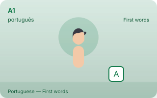
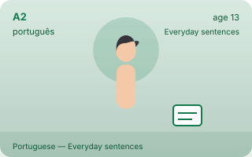

🌍Portuguese levels — A1 to C5, in order पाठ्यक्रमCourse
Portuguese levels — A1 to C5, in order
🔊 Tap any speaker button to hear the words on this page spoken. Too fast or slow? Use the speed button at the bottom-right of the page.
Portuguese runs the same eleven levels as every other course here, in the same order: A1 A2 A3 B1 B2 B3 C1 C2 C3 C4 C5. The six official CEFR levels carry the full authored content below; A3, B3, C3, C4 and C5 are EkGuru Extended Mastery levels — EkGuru's own extension, never official CEFR. A level is a description of what you can do, not an age group: a learner of any age can study any level.
The published course, counted. 36 lessons, 194 words with romanisation and 1108 questions with answers — every one of them readable on the level pages below, none of them filler.
An EkGuru Extended Mastery level — EkGuru's extension beyond the official CEFR scale, which has six levels and stops at C2. It is not a CEFR level and is never described as one. A course publishes an extended level only when its full content has been authored; an honest ladder shows the rungs in order and says so, instead of filling them with filler. How the eleven levels work →
A3 · Independent everyday useEkGuru Extended Mastery — in development. Hold everyday conversation without preparation, handle routine situations end to endPublished for this course when its content has been authored.
B3 · Mature fluencyEkGuru Extended Mastery — in development. Speak and write at length with precision, manage debate and wider productionPublished for this course when its content has been authored.
C3 · SpecializationEkGuru Extended Mastery — in development. Work inside a domain: legal, medical, technical or literary language at depthPublished for this course when its content has been authored.
C4 · Expert depthEkGuru Extended Mastery — in development. Academic and professional writing, research-grade reading, precise argumentPublished for this course when its content has been authored.
C5 · Teaching and mediationEkGuru Extended Mastery — in development. Teach, mediate between languages, translate and explain the language itselfPublished for this course when its content has been authored.
The eleven levels, in pictures

A1 First words

A2 Everyday sentencesA3 Independent everyday use · EkGuru Extended Mastery